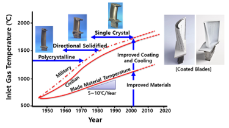

자주묻는질문(FAQ)
-
A1
가스 터빈(gas turbine 또는 combustion turbine)은 연소가스의 흐름으로부터 에너지를 추출하는 회전동력기관이다. 추출된 에너지로 항공기, 기차, 선박, 발전기, 전차 등을 구동하는데 사용된다.
-
A2
가스터빈은 상온부터 초고온까지 부위별 다양한 온도에서 구동됩니다. 따라서, 고온에서 요수되는 기계적 물성을 만족하는 소재를 사용하게 됩니다.
 -
A3
가스터빈 소재의 시험절차서는 해당 소재의 신뢰성있는 기계적 물성을 획득하기 위해서, 규칙적인 시험 수행 지침을 의미합니다. 소재의 기계적 물성에 대한 신뢰성은 규칙적인 시험 절차를 준수하여 확보되었습니다.
-
A4
홈페이지 카테고리 level별 소개
-
A5
회원가입 후 "마이페이지 - 등급상향 요청"에서 해당 양식을 작성(도장 또는 싸인 포함)하고 이메일에 첨부하여 회신